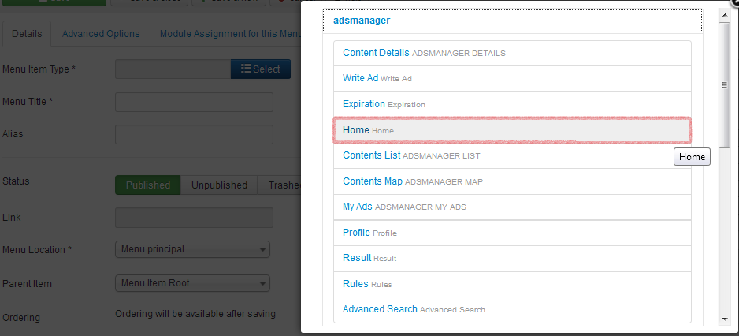

Assume you have just installed an AdsManager Pack
and you want to know how to use it.
When you first install AdsManager, nothing changes on
your website. You have to add a link to your menu, let's
see how to do it step by step.
First, add a link to the menu that corresponds to AdsManager.
Click on the "Select" button of the "Menu Item Type" field.
Next click on the "Select" button next to "Menu Item Type" then click on "AdsManager" and pick the view you want to display. In this example we've picked the "Home" option to display the home webpage of AdsManager.
Type the title you want, fill any options if you want to. You can choose to set the home AdsManager as the default web homepage of your website by clicking on "Yes" for the field "Default Page". You also can do it on the list view of your items menu as shown below.
Lastly vitis your new home webpage.